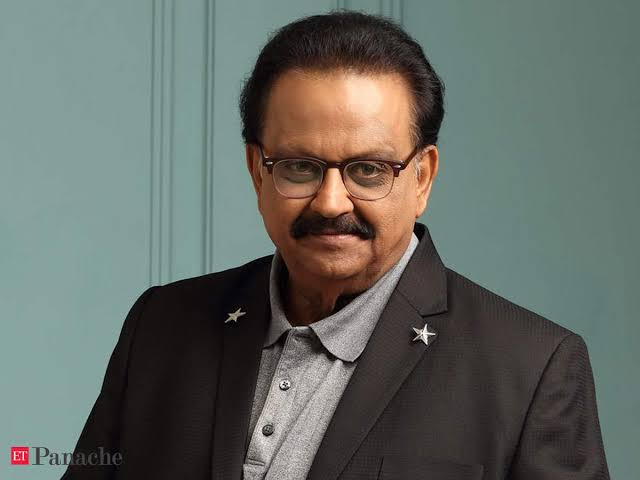

S. P. Balasubrahmanyam
an Indian playback singer, television presenter, actor, music composer, dubbing artist, and film producer
INTRODUCTION
Sripathi Panditaradhyula Balasubrahmanyam (4 June 1946 – 25 September 2020), also referred to as SPB or SP Balu or Balu
Balasubrahmanyam debuted as a playback singer on 15 December 1966 with the Telugu film Sri Sri Sri Maryada Ramanna scored by his mentor, S. P. Kodandapani
PROFILE
- S. P. Balasubrahmanyam was born in Nellore, in present-day Andhra Pradesh into a Telugu Brahmin family
- His father, S. P. Sambamurthy, was a Harikatha artist who also acted in plays.His mother was Sakunthalamma, who died on 4 February 2019.And,He had two brothers and five sisters, including singer S. P. Sailaja.His son S. P. Charan is also a popular South Indian singer, actor and producer.
- He was a recipient of the Padma Shri (2001), Padma Bhushan (2011), and Padma Vibhushan (posthumously) (2021) from the Government of India.
- On 25 September 2020, Balasubrahmanyam died in Chennai after being hospitalized for over a month for complications due to COVID-19
- Balasubrahmanyam received the NTR National Award from Government of Andhra Pradesh
- In 2015, he received the Harivarasanam Award from the Government of Kerala.[19] In 2016, he was honoured with the Indian Film Personality of the Year award at the 47th International Film Festival of India
- Throughout his career, Balasubrahmanyam has won awards not only for playback singing, but also for music direction, acting, dubbing and producing.